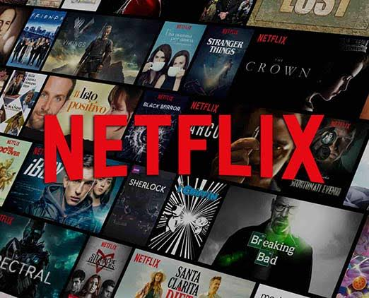
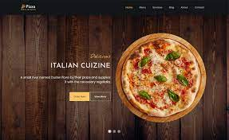

Latest Project

UI/UX Design
Netflix uses several fonts across its platform and marketing materials, but two of the most commonly used fonts are Gotham and Netflix Sans. Gotham is a geometric sans-serif typeface designed by Tobias Frere-Jones in 2000. It has a modern, clean look and is widely used in advertising and branding
